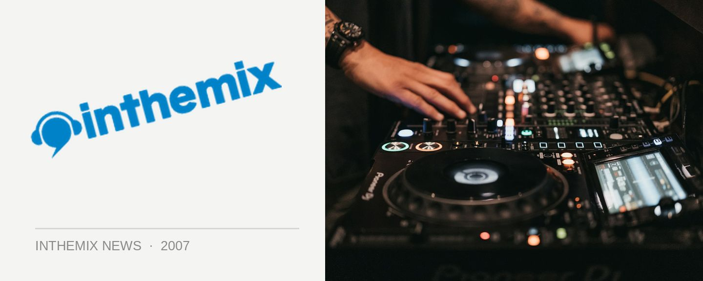

Dirty Funken’ Beats discount tickets on ITM
Dirty Funken’ Beats hits Cargo the very first time this Saturday for a massive event, and ITM has got its hands on an extremely limited round of discount tickets. They’ve got some of the country’s biggest house DJs onboard for the event, and you’ll be able to party on in the King Street Wharf sun for only $30+BF. But make sure you grab em quick!
From its humble beginnings as a Friday club night at Dragonfly, Dirty Funken’ Beats has developed to become one of the country’s most in-demand club brands. They’ve had huge events at Cabana Bar and at Sounds on Sunday this year, and now it’s Cargo’s turn. Epitomising the classy side of rockin’ electro house without the attitude, it’ll be the organiser’s first venture into the world of day events. There’ll be a huge sound system upgrade the DJ booth being moved outdoors, and a dancefloor created only metres from the waters edge so that everyone can revel in the Summer sunshine.
Dirty Funken’ Beats hits Cargo thus Saturday, grab your discount tickets now – exclusive to ITM! And have a peek below at the set times…
Upstairs
12.00-1.00: Steve Play b2b Jace
1.00-2.30: Brenden Fing b2b Tony Venuto
2.30-4.00: John Glover b2b Ben Morris
4.00-5.30: Seany B w/ Matt Roberts
5.30-7.30: Stafford Brothers + Timmy Trumpet
7.30-9.00: Tommy Trash
9.00-10.00: Ember
Downstairs
12.00-1.30: Even
1.30-3.30: Matt Ferreira
3.30-5.00: Mattttt & Tomass
5.00-7.00: Gus Da Hoodrat & Jaime Doom
7.00-9.00: Sam La More
9.00-10.00: Tim Sea